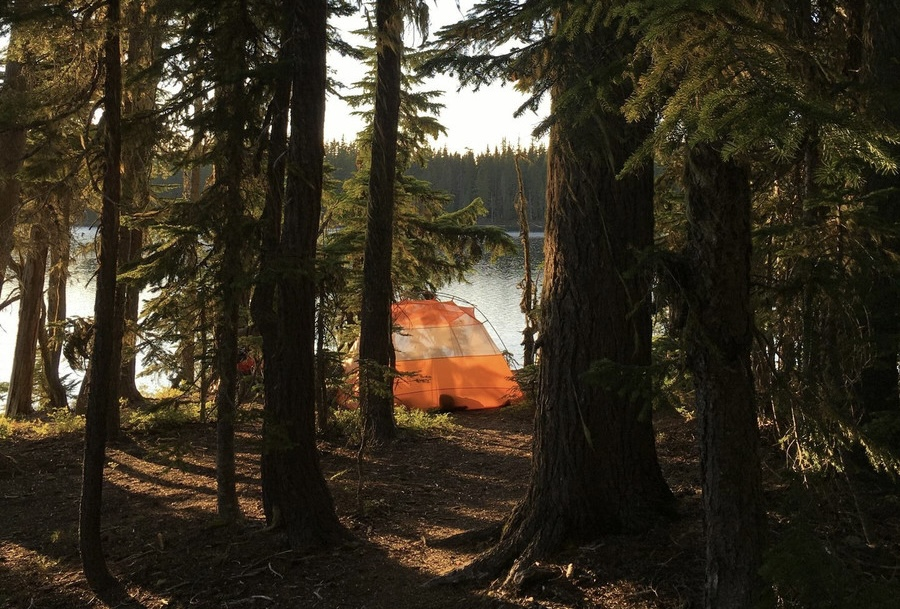
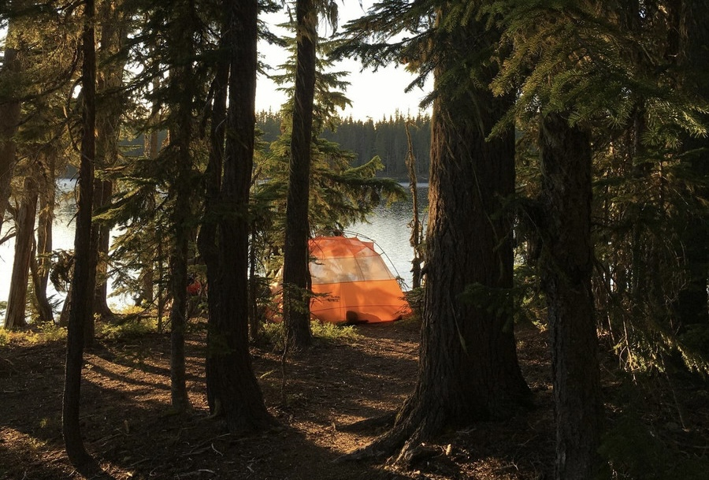

Image credit to Dawn Rae & Rob Knoth
Route Overview
"Featuring abundant organized and dispersed camping options, world class fly fishing, a choose-your-own adventure of single track options for those wanting a spicier route, and a hidden rope swing over the mighty Deschutes." -Rob Knoth
This route is a slightly easier gravel version of the High Cascades Overnighter. This route should be done June through October, since there will most likely not be snow on the road. Fires can be a problem during the summer months, so check for fires before heading out.